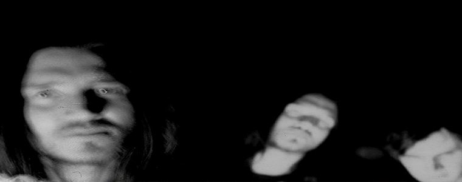

Johna Frusciante już za sam tytuł tej płyty pokochałaby wszystkie babcie moich znajomych. Dogadał by się też znakomicie z krawcową mojej mamy, która o swoim wiele lat temu zmarłym mężu opowiada tak, jakby nadal dzielił z nią życie… To nic, że nie znają się na muzyce rockowej, a z narkotyków próbowały co najwyżej makowca. Już widzę jak sadzały by go na honorowym miejscu przy stole, poiły herbatkami i mówiły o nim per: nasz Janek…
Otóż te przemiłe starsze panie podobnie jak John żyją w rzeczywistości, gdzie duchy zderzają się z ludźmi i bynajmniej nie ma znaczenia czy robią to w Londynie, w Los Angeles czy na podlaskiej wsi. Czwarty wymiar mógłby okazać się bardziej globalny niż nam się wydaje, a rzeczywistość tak samo ukształtowana zależnie od tego, jak na nią patrzymy.
Ale wróćmy do „SCWP”. Czwarty solowy album Johna Frusciante ukazał się 24 lutego 2004 roku i pod wieloma względami różnił się od poprzednich pozycji w jego dyskografii. Choć prace nad tworzeniem zawartych na nim piosenek przebiegały z przerwami niemal 2 lata, podczas których John przemierzał świat z RHCP i pracował nad utworami na płytę „By the Way”, jak sam twierdził po raz pierwszy miał tak spójną i konkretną wizję albumu. Po drugie po raz pierwszy nagrał materiał w profesjonalnym studiu, rezygnując ze swoich ukochanych chałupniczych metod. Po trzecie był to pierwszy album, który nagrał przy wsparciu Josha Klinghoffera – swojego wieloletniego przyjaciela i współpracownika. „SCWP” rozpoczęło stachanowski cykl 6 płyt wydanych przez Johna w 2004 roku – wiele z równolegle skomponowanych utworów świadomie trafiło na kolejne płyty lub np. na soundtrack filmu Vincenta Gallo „Brown Bunny” (to unikatowe wydawnictwo zostanie wkrótce reedytowane na winylu przez niezależną australijska oficynę Twelve Suns).
Choć John przeżywał wówczas fazę intensywnej fascynacji elektroniką, finalnie postawił na to by wyróżnikiem „SCWP” były żywe bębny – także nieobecne na poprzednich płytach. To stało się jednym z kryteriów selekcji powstającego w trybie klęski urodzaju muzycznego materiału. Tworzeniem perkusyjnych podkładów zajął się Josh Klinghofer, ale gdy przyszło do rejestracji gotowych kompozycji w Cello Studios jego miejsce musiał zająć Chad Smith, bo Josha zjadła trema.

Tematycznie widać pewien związek „SCWP” z nagranymi po „zmartwychwstaniu” Frusciante płytami Peppersów „Californication” i „By The Way”. Tu także przewija się gdzieś podskórnie refleksja nad marnością hedonistycznego życia gwiazdy, buzują te same emocje i zaangażowanie. Spod straceńczej, autodestrukcyjnej momentami aury pierwszych płyt Johna wydostała się nagle energia, szczerość, pełna skala muzycznego talentu Frusciante. Ale w przeciwieństwie do wyżej wymienionych płyt „SCWP” co chwila zaskakuje nas gwałtownymi zmianami brzmienia, nastroju, charakteru utworów. Wbrew swojej famie gitarowego geniusza Frusciante odsunął ten instrument na drugi plan. Owszem są tu momenty gitarowej ekstazy – choćby niezwykle dynamiczny jak na Frusciante „Second Walk”, ale generalnie on i Josh Klinghofer raczej skupili się na testowaniu możliwościami znakomicie wyposażonego studia, eksperymentowaniu z instrumentami, budowaniu skomplikowanych muzycznych struktur. Jakby potwierdzając tekst piosenki „Ricky” Frusciante nie boi się już być sobą i robi to, co podpowiadają mu jego muzyczne duchy. Już w dwóch pierwszych utworach widać to znakomicie. „Carvel” otwiera elektroniczny wstęp, potem mamy kawałek rocka z wyczuwalnym piętnem psychodeli, gdzie zaskakuje pewny, lekko podbarwiony efektami śpiew Johna i bogactwo falsetowych chórków Josha. No i wreszcie dochodzimy do finału gdzie to wszystko zostaje spiętrzone, by zaniknąć znów jako elektroniczne plumkanie. W „Omission” akustyczna gitarowa melodia (czy nikomu jej początek nie kojarzy się z „Californication”?) zostaje wzmocniona syntetyzatorami i anielskimi wokalizami obu panów. Potem włączają się do tego perkusja i melotron. Babcie już się cieszą na wspólny występ z cerkiewnym chórem.
Gdyby „Regret” John nagrał kilka lat wcześniej mógłby to być smutny skowyt udręczonej duszy. Tymczasem na „SCWP” to jedna z najbardziej pozytywnych piosenek, wbrew dziwnemu tekstowi napełniająca nadzieją. To również zasługa pięknej melodii, pełnego emocji śpiewu i starannej produkcji . John wielokrotnie musiał potem w wywiadach tłumaczyć znaczenie tej piosenki i przekonywać, że niczym Edih Piaf nie żałuje niczego, łącznie ze swoim narkotykowym nałogiem.
Frusciante choć jak zwykle na solowych płytach jest bardzo introspektywny, na „SCWP” daje swoim słuchaczom dużą dawkę budujących przemyśleń. Tak jest choćby w kolejnym utworze „Ricky” – gdzie w refrenie przekonuje, że każdą negatywną sytuację można przekuć w coś pozytywnego i uskrzydlającego. To też swego rodzaju komentarz do poprzedniego utworu: „I don`t blame my weak…”. I znów mamy piękną melodię na gitarze akustycznej (inspirowaną ponoć utworami amerykańskiego twórcy country Ricky`ego Nelsona) i roztapiający serce wokalny duet Johna i Josha.
Ale żebyśmy zbytnio się nie rozmarzyli. Na „SCWP” pojawiają się co rusz różnego rodzaju instrumenty klawiszowe i elektroniczne odloty w rodzaju „Failure33Object” , „Negative 00Ghost27” i „23 Go Into End”. Co ciekawe wydają się tu równie na miejscu jak garażowo-rockowy „This Cold” (oparty na tych samych akordach co słynny „Passenger” Iggy`ego Popa), jakby napisany z myślą o śpiewaniu przy ognisku „In Relief” czy jeden z najpopularniejszych utworów Johna, „Song to Sing When I`m Lonely” (jakoś trudno użyć w odniesieniu do twórczości Frusciante słowa przebój). Tu warto przypomnieć, że „SCWP” ma swoją akustyczną wersję, którą muzyk udostępnił fanom, podobnie jak wstępne, surowe wersje nagrań z Klinghofferem za perkusją.
W drugiej części płyty także pojawiają się echa paprykowych klimatów: gitarowe solo w „Water”, czy słodko-gorzki „The Slaughter” ( z gościnnym popisem Flea na basie). Jednak generalnie dominuje klimat „robimy co chcemy, a skoro mamy do dyspozycji studio za 150 tys. dolarów to wykorzystajmy to do oporu”.
„SCWP” jest płytą wybitną, bo łączy najlepsze elementy wcześniejszych płyt Johna: emocjonalny ekshibicjonizm „Niandra and Usually Just a T-shirt” i „Smile From The Streets You Hold” z melodyjnością „To Record Only Water For Ten Days”. To wszystko w oprawie poszerzonego instrumentarium, znacznie bardziej wokalnie sprawnego Johna oraz znakomitych muzycznych gości robi ogromne wrażenie, zwłaszcza, że tym razem Frusciante postanowił udowodnić, że jest w stanie wyprodukować płytę o niezwykle dopracowanym brzmieniu. Dziesięć lat po nagraniu „SCWP” wiemy, że od tej płyty zawsze słucha już tylko tego, co mu powiedzą jego duchy.